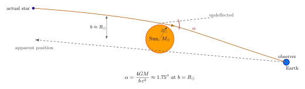

光为什么会被太阳偏折?
1801 年, 德国天文学家 Johann Georg von Soldner 写过一篇短文, 用 Newton 力学问了一个奇怪的问题: 如果光是粒子, 它经过太阳时会不会被太阳的引力拉偏? 他给出的答案是, 一个掠过太阳边缘的光粒子, 它的运动方向会在通过太阳前后偏转 $0.875''$ — 不到一角秒. 当时没人在意. 一百一十多年后, Einstein 在 1911 年用刚发明的等效原理再算了一遍, 算出 $0.83''$, 数字几乎一样. 又过了四年, 他完整的广义相对论给出 $1.75''$ — 整整两倍. 1919 年 5 月 29 日日食, Eddington 测到的就是那个翻倍后的值. 这一节我们就来看, 为什么 Newton + 等效原理的"一半"是错的, 而完整 GR 的"两倍"才是对的.
一、Newton 的硬算: 光做粒子, 引力做加速度
把光想成一颗高速粒子, 它以光速 $c$ 沿一条几乎是直线的轨道掠过太阳. 取太阳质心为原点, 设光线沿 $x$ 方向飞行, 距离太阳中心最近时的横向距离为冲击参数 $b$ — 也就是 $y\equiv b$. 太阳的引力 $\mathbf g=-GM\hat r/r^2$ 一直拉这颗粒子, 但因为 $v=c$ 太大, 它来不及向太阳掉, 只能在通过的瞬间被拉一下, 留下一个微小的横向速度增量 $\Delta v_y$.
沿直线积分横向 (即 $y$ 方向) 加速度. 在直线轨道上, $r=\sqrt{x^2+b^2}$, 横向加速度分量为 $g_y=-GMb/r^3=-GMb/(x^2+b^2)^{3/2}$. 时间从 $-\infty$ 积到 $+\infty$, 用 $x=ct$:
$$ \Delta v_y=\int_{-\infty}^{+\infty}g_y\,\mathrm dt=-\frac{GM b}{c}\int_{-\infty}^{+\infty}\frac{\mathrm dx}{(x^2+b^2)^{3/2}}=-\frac{2GM}{bc}. $$
最终偏角是 $\alpha_{\rm Newton}=|\Delta v_y|/c$, 即
$$ \alpha_{\rm Newton}=\frac{2GM}{bc^2}. \tag{1} $$
把太阳的数字塞进去 — $G=6.674\times 10^{-11}\,\mathrm{m^3 kg^{-1}s^{-2}}$, $M_\odot=1.989\times 10^{30}\,\mathrm{kg}$, $b=R_\odot=6.96\times 10^8\,\mathrm{m}$, $c=2.998\times 10^8\,\mathrm{m/s}$. 上下凑一下:
$$ \frac{2GM_\odot}{R_\odot c^2}=\frac{2\times 6.674\times 10^{-11}\times 1.989\times 10^{30}}{6.96\times 10^8\times (2.998\times 10^8)^2}\approx 4.244\times 10^{-6}\;\text{rad}. $$
1 弧度 $\approx 206265''$, 所以 $\alpha_{\rm Newton}\approx 0.875''$ — 这就是 Soldner 1801 年的数字. 这个答案有一个让人不安的特点: 它独立于光速 $c$ 在两个意义上的取值. 一是粒子可以是任何速度, 不必是 $c$, 公式里 $c$ 只是从分母把它推走; 二是引力质量与惯性质量被默认相等 — Soldner 是凭直觉假设光粒子像石头一样响应引力, 但他没法回答"为什么". 我们需要一个更深的论证.
二、Einstein 1911: 等效原理给出"一半"
Einstein 在 1907 年想到了等效原理, 1911 年在《关于光的传播受重力影响》里第一次用它去算光的偏折. 他的逻辑是这样的: 站在自由下落的电梯里, 我感受不到引力 — 这是上一节讲过的. 反过来, 站在地面上的实验室, 等价于一个匀加速向上的电梯. 在这个电梯里, 一束水平射入的光会怎么走? 因为电梯一直在加速向上, 当光横穿电梯时, 电梯壁已经向上挪了一点; 光在电梯参考系里看来, 就下落了. 这是引力让光弯曲的原始论证.
把这个论证翻译成度规的语言. 在弱引力极限, 度规可以写作
$$ \mathrm ds^2=-\bigl(1+2\Phi/c^2\bigr)c^2\,\mathrm dt^2+\bigl(1-2\Phi/c^2\bigr)\bigl(\mathrm dx^2+\mathrm dy^2+\mathrm dz^2\bigr), $$
其中 $\Phi(\mathbf r)=-GM/r$ 是 Newton 引力势 (取无穷远为零, 引力源处为负). 但 1911 年 Einstein 还没有这个完整度规. 他只用了第一项 — 时间分量 $g_{tt}=-(1+2\Phi/c^2)$ — 因为引力红移已经告诉他时钟会变慢. 他暗中假定空间是平直的, 即 $g_{ij}=\delta_{ij}$.
在这种"只有时间被弯了"的近似下, 光的有效速度是个空间位置的函数: 由 $\mathrm ds^2=0$ 与 $g_{ii}=1$ 得 $c_{\rm eff}=c\sqrt{-g_{tt}}\approx c(1+\Phi/c^2)$. 引力势越深, 光越慢 (从远处的钟看). 这就好比光在一种折射率 $n=1-\Phi/c^2$ 的介质里传播 — 折射率随位置变化, 由 Fermat 原理光线就会弯. 算出来的偏角是
$$ \alpha_{\rm Eq}=\frac{1}{c^2}\int_{-\infty}^{+\infty}\frac{\partial\Phi}{\partial y}\,\mathrm dx=\frac{2GM}{bc^2}. \tag{2} $$
同样的 $0.875''$. Einstein 1911 年发表这个结果, 还提议过让弗罗因德利希 (Erwin Freundlich) 在 1914 年的克里米亚日食里测一下 — 结果远征队遇上一战爆发, 望远镜被沙俄当作敌方设备查扣, 没测成. 这件事其实救了 Einstein: 如果当时测出 $0.85''$ 跟他理论吻合, 大家以为 GR 就这样; 等他 1915 年发现完整理论, 数字翻倍, 就尴尬了.
三、为什么少了一半: 空间也得弯
Einstein 1915 年完成广义相对论后, 立刻意识到问题. 完整的 Schwarzschild 度规在弱场极限是上面那个有两个修正项的式子: 时间分量 $g_{tt}\approx -(1+2\Phi/c^2)$ 和空间分量 $g_{ii}\approx (1-2\Phi/c^2)$. 1911 年那个推导只用了时间, 缺了空间. 把空间分量加回来, 等于把光线视为传播在折射率
$$ n(\mathbf r)\approx 1-\frac{2\Phi}{c^2}=1+\frac{2GM}{rc^2} $$
的介质里 — 系数从 $1$ 变成 $2$. 用 Fermat 原理重做, 偏角直接乘以 $2$, 得到
$$ \alpha_{\rm GR}=\frac{4GM}{bc^2}. \tag{3} $$
更深一层的理解: 在 GR 里, 光走的是 null 测地线. 把光线方程从 Schwarzschild 度规写出来 — 设 $u=1/r$, 用 $\phi$ 作参数, 得到
$$ \frac{\mathrm d^2u}{\mathrm d\phi^2}+u=\frac{3GM}{c^2}u^2, $$
右边那一项就是 GR 相对于 Newton 的修正 — 它是纯空间几何带来的, 不是时间膨胀带来的. 用零阶解 $u_0=\sin\phi/b$ (直线) 代回右端做微扰积分, 总偏角就是 $4GM/(bc^2)$. 那个因子 $2$ 不是数学技巧, 它是 Schwarzschild 度规里时间项与空间项系数刚好相等的几何事实: 弱场里 $g_{tt}+1=-(g_{ii}-1)=2\Phi/c^2$. 时间项贡献一半, 空间项贡献另一半.
把太阳的数字代入 (3):
$$ \alpha_{\rm GR}=\frac{4GM_\odot}{R_\odot c^2}=2\times 0.875''=1.7505''. $$
这就是历史课上听过的那个数字, 1.75 角秒. 1 角秒等于 $1/3600$ 度, 大约相当于一公里之外看一枚硬币的边缘宽度. 这个微小的偏移就是要在日食时拿星图比对前后位置才能测出来的.

四、1919 日食: Eddington 的胶片与世界的目光
1919 年 5 月 29 日, 一次时长六分钟的日全食横扫南美与西非. 英国皇家天文学家 Frank Watson Dyson 与剑桥的 Arthur Eddington 在战后第一年组织了两支远征队: Andrew Crommelin 带队去巴西的 Sobral, Eddington 亲自带队去几内亚湾的 Príncipe 岛. 两队的任务相同 — 在日全食的几分钟里曝光太阳周边的恒星, 几个月后再在夜空里曝光同一片恒星, 比对两组照片上恒星的位置差.
原理是直接的: 平时这些恒星离太阳投影位置很远, 是它们的"真位置"; 当太阳挡到它们前面时, 太阳引力把光线偏折 $\alpha$, 恒星看上去就被太阳"推开"了一点. 推开的方向沿径向 (远离太阳), 大小随 $1/b$ 衰减 — 边缘处最大, 越远越小. 几颗参考星各对应一个 $b$, 拟合出 $\alpha=4GM/(bc^2)$ 这条曲线.
Príncipe 岛日食那天云挺多, Eddington 拍到能用的星不多. 而 Sobral 队倒是天气好, 但他们带了两台仪器, 其中较大的那台因为白天日晒变形, 主测后来被废. 关键数据来自 Sobral 的 4 英寸望远镜 + Eddington Príncipe 的几张胶片. Dyson 在 1919 年 11 月 6 日伦敦皇家学会会议上给的结论是: $\alpha=1.61''\pm 0.30''$ (Príncipe), $1.98''\pm 0.12''$ (Sobral). 两个数都更接近 GR 预言的 $1.75''$ 而非 Newton 的 $0.875''$, 误差棒可以排除 Newton.
消息第二天上《伦敦时报》, 标题 "Revolution in Science — New Theory of the Universe — Newtonian Ideas Overthrown". Einstein 一夜之间从一个学术圈名字变成全世界都听过的人. 他在写给母亲的信里讲了一句被引用很多次的话: "亲爱的妈妈, 今天有个好消息. Lorentz 发电报告诉我, 英国远征队真的证实了光在太阳附近偏折."
后人对这次测量的统计意义还有过争论 — Sobral 4 英寸的样本误差颇大, Príncipe 只剩下两颗星可用. 但这件事从此奠定了 GR 的地位, 也开启了"把广义相对论当作一种可观测的物理"这条路. 现代的同类测量已经精确到惊人的程度: VLBI (甚长基线干涉测量) 用射电源代替光学恒星, 类星体 3C 279 每年都被太阳挡过一次, Lebach 等人 1995 年用这套方法把 $\alpha/(4GM/bc^2)$ 的比值测到 $0.9998\pm 0.0008$, 即 GR 预言被证实到 $\sim 10^{-3}$ 精度. 后来 Cassini 探测器到土星途中, 用太阳掩星时电信号的延迟把这个比值压到 $\sim 10^{-5}$. GR 在弱场里几乎没有可疑的余地.
五、一个简洁的几何视角: 引力透镜
如果光线偏折的数字这么稳, 那它就成了一种探测器. 一个大质量天体 (恒星、星系、星系团) 挡在我们和某个遥远光源之间, 光绕着它走过两侧, 我们看到光源被复制成多个像 — 这就是引力透镜. 1936 年 Einstein 自己写过一篇短文, 算了恒星-恒星引力透镜效应, 但他认为概率小到永远观测不到; 1937 年瑞士天文学家 Fritz Zwicky 反驳道, 用星系当透镜, 概率就高得多. 1979 年 Walsh, Carswell, Weymann 发现"双类星体" QSO 0957+561 — 两颗类星体光谱完全一样, 实际是同一颗星被前景星系透镜成两个像. 这件事直接证实了 Einstein 的想法.
引力透镜的几何很简洁. 把透镜方程写出来:
$$ \beta=\theta-\frac{D_{ls}}{D_s}\,\hat{\alpha}(\theta), $$
其中 $\beta$ 是源真位置, $\theta$ 是观测到的像位置, $\hat{\alpha}=4GM/(bc^2)$ 是 GR 偏角. 当源、透镜、观测者完美共线 ($\beta=0$), 解得 $\theta=\theta_E$, 即 Einstein 半径:
$$ \theta_E=\sqrt{\frac{4GM}{c^2}\,\frac{D_{ls}}{D_l D_s}}. $$
它把 $1.75''$ 这个微小角度放大到星系尺度: 取一个 $10^{12}\,M_\odot$ 的星系当透镜, 距离 1 Gpc, $\theta_E$ 是几个角秒, 在哈勃望远镜的图像上看得清清楚楚. 这就是为什么今天的引力透镜既是宇宙学测量工具 (用透镜放大背景星系反推暗物质分布), 也是寻找系外行星的手段 (微透镜光变曲线), 还是验证 GR 的额外维度 — 而它的所有内核, 都来自 (3) 那一个公式.
小结
从 Newton 力学硬算, 我们得到偏角 $\alpha=2GM/(bc^2)$; 这个数字来自"光像粒子一样响应引力". Einstein 1911 年用等效原理 + 时间膨胀, 重新算出同一个数字, 但这次有了明确的物理基础 — 引力红移让远处的钟变慢, 把光看成在变折射率的介质里传播. 到 1915 年完整 GR, 空间度规的 $g_{ii}\approx 1-2\Phi/c^2$ 部分被加回来, 它的贡献和时间分量恰好相等, 让总偏角翻倍到 $\alpha=4GM/(bc^2)\approx 1.75''$. 这个"翻倍"是 GR 相对 Newton 最干净的特征: 它不是来自时间, 而是来自空间几何本身. 1919 年的日食测量把 GR 推到台前, 此后一百多年里, 类星体掩星、Cassini 雷达延迟、Hubble 引力透镜、EHT 黑洞照片 — 全部是这个偏角公式的后裔. 下一节我们要把这种几何思想给个更精确的舞台 — Minkowski 时空: 距离怎么定义、光锥是什么、世界线是什么. 那是讲 Schwarzschild 度规之前, 必须先到的地方.
▲